Häufig gestellte Fragen von OOo - Mitarbeiter
4. "Werkzeuge für Mitarbeiter"
Sammlung (vermutlich) häufig gestellter Fragen und Antworten zur Mitarbeit am de-Projekt von OpenOffice.org (Mitarbeiter-FAQ)
Fragen zu "Werkzeuge für Mitarbeiter"
-
Die Mailingliste dev@de.openoffice.de
- Was ist eine Mailingliste?
- Wie trägt man sich in der Mailingliste ein?
- Wie bedient man sie sicher?
- Muss ich mich vorstellen, wenn ich zum ersten Mal was schreibe?
- Welche Umgangsformen sind denn erwünscht und notwendig?
- Welches ist das Thema der dev-Mailingliste? Was kann ich hier schreiben?
- Wie finde ich zum Archiv?
- Was ist eine PM? Wann ist die besser angebracht?
- Muss ich alles lesen, ich verstehe kaum die Hälfte?
- Warum stehen unter manchen Mails +1 oder -1?
- Wie funktioniert eine Abstimmung über eine Mailingliste?
- Welche anderen Mailinglisten gibt es noch?
- Wie genau funktioniert denn das mit dem Moderieren?
-
Der IssueZilla
- Was ist IssueZilla? Was ist ein Issue?
- IssueZilla mag mich nicht. Warum?
- Beim Issue sind so viele Felder, welche sind denn nun wirklich wichtig?
- Wie bekomme ich mit, wenn jemand einen Issue aufmacht?
- Wie finde ich einen Issue?
- Und wenn nun jemand was an einem Issue ändert?
- Ich will auch bei einem Issue mitwirken. Was kann ich ändern?
- Wie schreibt man einen Bugreport zur deutschsprachigen Online-Hilfe?
- Die Webseite de.OpenOffice.org
- Projektverwaltung
- OOoauthors.org
-
CVS (Concurrent Versions System)
- Wie kommt denn die Webseite zustande?
- Wie kann ich eine bestehende Webseite korrigieren?
- Wie kann ich eine neue Webseite erstellen?
- Warum ist das so kompliziert?
- Wie kann ich schreibend am CVS teilnehmen?
- Was passiert auf der CVS- Mailingliste?
- Was bedeuten die Buchstaben-Codes, die zu jeder Datei im CVS angegeben werden?
- Wer hilft, wenn ich mal nicht weiter weiß?
Antworten zu "Lizenzen"
1. Die Mailingliste dev@de.openoffice.de
1.1 Was ist eine Mailingliste?
Eine Mailingliste ist eine der beliebtesten Methoden, eine E-Mail an mehrere Leute gleichzeitig zu schicken. Technisch verbirgt sich hinter der Emailadresse der Mailingliste ein Programm (Listenserver), das Deine E-Mail an alle weiterschickt, die sich in diesen E-Mailverteiler eingetragen haben. Gleichzeitig verwaltet der Listenserver die Mitglieder und legt ein Archiv aller jemals an ihn geschickten Emails an.
1.2 Wie trägt man sich in der Mailingliste ein?.
Sende eine Email an dev-subscribe@de.openoffice.org.
Hinweise zum Eintragen in die dev - Mailingliste des de-Projektes gibt es unter
http://de.openoffice.org/dev/about-ooo/about-mailinglist.html.
1.3 Wie bedient man sie sicher?
Praktisch funktioniert die Kommunikation mit einer Mailingliste genauso wie mit einem einzelnen E-Mailempfänger. Wenn Du also Dein E-Mailprogamm im Griff hast, dann sollten auch mit den Mailinglisten von OpenOffice.org keine Schwierigkeiten auftreten. Bitte bedenke aber immer, dass einige hundert Menschen mitlesen und fasse Deine Beiträge mit entsprechender Sorgfalt ab, um uns Lesern das Verständnis zu erleichtern. Die Sprache der Mailingliste ist Deutsch und wir Duzen uns. Eine gute Idee ist es meist, erst mal einige Zeit die Mailingliste lesend zu verfolgen, um ein Gefühl für den Ton zwischen den Mitarbeitern zu erhalten. Des weiteren gibt es eine so genannte Netikette, also eine Etikette für das Netz, die allgemeine Hinweise zu guten Umgangsformen im Netz gibt.
1.4 Muss ich mich vorstellen, wenn ich zum ersten Mal was schreibe?
Eine kurze Vorstellung mit Deinem Namen und Beruf wird gern gesehen, ist aber keine Pflicht. Es ist sehr hilfreich, wenn Du noch zufügen kannst, in welchem Umfeld (Schule, Universität, Behörde, Firma etc.) Du OpenOffice.org einsetzt und wo Du Deine Stärken und Ziele bei der Mitarbeit siehst. Wenn Du Dich gerne vorstellen willst, aber noch nach Worten suchst, vielleicht inspirieren Dich diese Beispiele: http://de.openoffice.org/dev/team.html
1.5 Welche Umgangsformen sind denn erwünscht und notwendig?
- Bitte gib Deinen Vor- und Nachnamen in der From:-Zeile an. Wir wissen gern, mit wem wir uns unterhalten. Wenn Dir ein Pseudonym zur zweiten Identität geworden ist, verwende es bitte lediglich als Rufnamen zwischen Vor- und Nachnamen in der From:-Zeile.
- Oft verwenden Teilnehmer die Antwortfunktion des Mailprogramms, um ein neues Thema anzufangen. Dabei löschen sie den als Zitat
eingelesenen Inhalt und das Subjekt. Jedoch bleiben bei diesem Verfahren die (unsichtbaren) Verwaltungsinformationen der Mail erhalten und
die Mail wird jetzt beim Empfänger in den ursprünglichen Thread einsortiert.
Stell Dir vor, Du platzt in ein Gespräch mit einem völlig anderen Thema hinein. Dementsprechend ruppig kann die Reaktion der anderen ausfallen.
Also schreibe eine neue Mail. Viele Mailprogramme unterstützen Dich dabei, indem sie gleich die Listenadresse in das Empfängerfeld eintragen. Schau einmal nach, ob Dein Mailprogramm das auch kann. - Schickst Du Briefe, die Du auf Papier erhältst und beantwortest, auch wieder an den Absender zurück? Nein, Du wirst in Deinen
eigenen Worten den Inhalt wiederholen, um einen Bezug herzustellen.
Dein Mailprogramm erspart Dir diese Arbeit und liest die alte Mail, versehen mit Quotezeichen (>), wieder ein. Nun hast Du es ganz leicht, zu antworten. Aber lösche alles, auf das Du Dich nicht beziehst. Absolut unnötig ist das Fullquoting (TOFU). Niemand möchte die ursprüngliche Mail noch einmal komplett zurück.
Deine Antwort kommt unter die Textstelle, auf die Du Dich beziehst. Das entspricht der üblichen Leserichtung von oben nach unten. - Im deutschen Sprachraum gehört dazu das Einhalten der Groß- und Kleinschreibung. Über einen Vertipper regt sich niemand
auf, eine grobe Missachtung der Rechtschreibregeln oder das Ignorieren von Satzzeichen dagegen macht das Lesen des Textes mühselig.
Beachte: am Bildschirm liest sich Text anders als auf dem Papier. Spare daher nicht mit dem Setzen von Absätzen. Deine Leser werden es Dir danken. - Wirf einen genaueren Blick in die Konfigurationsmenüs Deines Mailprogramms.
Dein Zeichensatz sollte auf iso-8859-1 oder iso-8859-15 stehen. Die maximale Zeilenlänge beträgt 72 Zeichen; 68 haben sich in der Praxis vieler sehr bewährt. Der Text Deiner Mail soll aus bloßem Text bestehen (oft ist die Voreinstellung HTML), das Quotezeichen ist ein '> ' (Größer-)Zeichen plus einem Leerzeichen, die Kennzeichnung für eine Antwort ist ein einziges 'Re: ' + einem Leerzeichen.
Leider ignorieren viele Mailprogramme diese Standards in ihrer Grundkonfiguration. Es ist aber meistens ganz leicht, das umzustellen. Bitte mache Dir die Mühe.
Eine ausführlichere Version dieses Textes mit vielen weiteren Tipps findest Du unter www.eschkitai.de/netikette.html.
1.6 Welches ist das Thema der dev-Mailingliste? Was kann ich hier schreiben?
Die dev-Mailingliste dient der (internen) Organisation des Projekts und ist für diejenigen gedacht, die sich aktiv
ins Projekt einbringen wollen. Hier geben die Kollegen auch Hilfestellung, wenn es um die Bedienung von IssueZilla und anderen Werkzeugen
geht oder es werden neue Ideen diskutiert. Über die dev-Mailingliste werden auch Aufgaben verteilt. Letztlich gibt es
keinen Aspekt der internen Projektorganisation, der nicht auf dev besprochen werden könnte.
Allerdings gibt es einige spezialisierte Listen zum Thema marketing
und business, in denen diese Themen besser
aufgehoben sind.
Fragen von Nutzern werden umfassend auf der Mailingliste users
beantwortet.
Themen, die anderen Projekten zuzuordnen sind, sollten auf deren
Mailinglisten angesprochen werden.
1.7 Wie finde ich zum Archiv?
Schau in die "Project tools"-Box auf einer unserer Webseiten. Klicke auf Mailing lists und schon hast Du die Links
zu den einzelnen Mailinglistenarchiven des de-Projekts. Oder Du klickst diesen Link an.
Als Alternative kann man sich auch an ein externes Archiv wenden, z.B. hier.
1.8 Was ist eine PM? Wann ist die besser angebracht?
Eine PM ist eine persönliche Mail. Keinesfalls alle Kommunikation zwischen Mitarbeitern des Projektes muss über die Mailingliste laufen, sondern meist nur das, was auch für mehr als zwei von Interesse ist. Das ist natürlich im Ermessen des Einzelnen, aber im Zweifelsfall solltest Du Dich an die Liste wenden. Nicht an die Liste sondern direkt an den entsprechenden Mitarbeiter schicken solltest Du Dateianhänge, z.B. mit korrigierten und überarbeiteten Dokumenten.
Zudem kann PM auch Pressemitteilung bedeuten.
1.9 Muss ich alles lesen, ich verstehe kaum die Hälfte?
Am Anfang ist es nicht ungewöhnlich, nicht alle Mails zu verstehen, das gibt sich aber schon nach kurzer Zeit. Wenn Du eine Abkürzung,
einen Ausdruck oder die Bedeutung eines Themas nicht verstehst, dann frage einfach in der Liste nach.
Wirklich alle Mails zu lesen ist nicht notwendig. Konzentriere Dich am Anfang am besten auf die Mails, in denen es um allgemeine Fragen
geht oder um den Themenkomplex, an dem Du mitarbeiten willst. Um das auch anderen zu erleichtern, solltest Du ein aussagekräftiges
Subject/Betreff in Deinen Mails wählen.
1.10 Warum stehen unter manchen Mails +1 oder -1?
dadurch wird Zustimmung (+1) oder Ablehnung (-1) zu einem Abstimmungsvorschlag, einer Idee oder einem Diskussionsgegenstand geäußert.
1.11 Wie funktioniert eine Abstimmung über eine Mailingliste?
Wenn die Haltung der Mitglieder des Projektes zu einer Frage unklar ist, kann ein Abstimmung durchgeführt werden, bei der alle
Projektmitglieder auf der Mailingliste ihre Meinung durch ein +1 oder ein -1 kundtun.
Bei Abstimmungen sollte man darauf achten, dass der Vorschlag verständlich formuliert ist und allen Beteiligten genug Zeit
(im Rahmen von Tagen) gegeben wird, darauf zu reagieren. Ebenso kann eine Abstimmung die Meinungsbildung durch Diskussion in der Liste nicht ersetzen.
Abstimmungen können auch über zu vergebende Posten geführt werden. Dabei sollte vorher genug Gelegenheit bestehen, Kandidaten in
der Mailingliste vorzuschlagen. Wenn möglich sollten diese sich in der Mailingliste vorstellen. Die Durchführung obliegt zwei
Wahlleitern und geschieht per Mail an den Wahlleiter, lediglich das Ergebnis wird auf der Liste bekannt gegeben. Eine derartige Abstimmung
kann auch für wesentliche Projektentscheidungen verwendet werden.
1.12 Welche anderen Mailinglisten gibt es noch?
Folgende deutschsprachigen Mailinglisten werden angeboten:
-
dev@de.openoffice.org
Hier werden Diskussionen über OpenOffice.org und OpenSource im Allgemeinen geführt und die Arbeit der Projektmitglieder koordiniert. -
announce@de.openoffice.org
Moderierte Liste, Mitteilungen über Verfügbarkeit neuer deutschsprachiger Versionen der Software u.ä., Ergänzung zu announce@openoffice.org. -
users@de.openoffice.org
Hier gibt es Hilfe bei der Benutzung der Office-Suite OpenOffice.org. -
cvs@de.openoffice.org
Bei jeder Änderung unserer Website werden automatisch Benachrichtigungen über diese Liste verteilt. -
issues@de.openoffice.org
Liste zur Verteilung aller IssueZilla-Nachrichten des de-Projekts. -
marketing@de.openoffice.org
Liste zu Marketing, Presse und Öffentlichkeitsarbeit des de-Projekts. -
business@de.openoffice.org
Liste zum produktiven Einsatz von OpenOffice.org in Unternehmen, Verwaltung und Organisationen mit Themen zu Migration, Datenbanken, Basic, Applikationen, API, UNO. -
comenius@de.openoffice.org
Europäische Mailingliste zur Koordination des EU-Projekts "OpenOffice in european schools". -
test@de.openoffice.org
Zum Test der Konfiguration des E-Mailprogrammes.
Die Anmeldung erfolgt durch einen Klick auf den Namen in der obigen Liste oder auf der Seite: http://de.openoffice.org/servlets/ProjectMailingListList.
1.13 Wie genau funktioniert denn das mit dem Moderieren?
Alle Moderatoren bekommen eine Mail mit dem Betreff "MODERATE for ...@de.openoffice.org" in der die abgewiesene Mail als Anhang dabei ist.
Die Mail können wir dann akzeptieren (einfach auf die Mail antworten) oder mit einem Kommentar abweisen. Spam löschen wir einfach nur.
Wenn eine Mail abgewiesen wurde und der andere sie dann durchgehen lassen würde, geht das auch nicht. Dann gibt es eine Meldung zurück,
dass die Nachricht bereits "rejected" wurde.
2. Der IssueZilla
2.1 Was ist IssueZilla? Was ist ein Issue?
IssueZilla ist ein eigenes Werkzeug von OpenOffice.org. Es basiert auf Bugzilla, was OpenSource ist und von dem Mozilla-Projekt entwickelt wurde. Es wurde aber von CollabNet erweitert, um alle Typen von Anliegen handhaben zu können und nicht nur solche, die den Quelltext betreffen. Zur Zeit werden folgende Anliegen unterstützt: Fehler (defect), Erweiterung (enhancement), Feature, Aufgabe (task) und Patch. Wir können in Zukunft neue Typen hinzufügen und sie können verschiedenen Komponenten der Projekte zugeordnet werden: 'Dokumentation', 'Code', 'Benutzeroberfläche (ui)', 'Definition'. Projekte bei OpenOffice.org sind beispielsweise 'API', 'Diagramme (chart)', 'Datenbankzugriff (database access)', 'Zeichnen (drawing)', 'Formeleditor (formula editor)', 'Präsentation (presentation)', 'Tabellenkalkulation (spreadsheet)', 'Textverarbeitung (word processor)' und 'XML', um nur einige zu nennen. Wirf einen Blick auf die Projektliste, um alle zu sehen.
2.2 IssueZilla mag mich nicht. Warum?
Vermutlich hast Du vergessen, Deinem Browser zu sagen, er müsse Cookies zulassen. Die Authentifikation von OpenOffice.org zu Dir wird über Cookies gewährleistet. Leider gibt sie keine Rückmeldung, wenn die Erlaubnis zum Setzen von Cookies fehlt. Erlaube Cookies und lade die Seite neu. Dann sollte IssueZilla kooperativer sein.
2.3 Beim Issue sind so viele Felder, welche sind denn nun wirklich wichtig?
Einige Felder werden bereits automatisch ausgefüllt, andere sind erst zu einem späteren Zeitpunkt der Bearbeitung interessant.
Es ist nicht schlimm, wenn am Anfang nicht alle absolut korrekt ausgefüllt ist. Neue Issues werden zuerst von Mitgliedern des
QA-Projektes bearbeitet, die die Einstellungen überprüfen und gegebenenfalls noch einmal nachfragen, wenn mehr Informationen benötigt werden.
Du solltest aber auf jeden Fall eine möglichst treffende Kurzbeschreibung Deines Anliegens im Feld "summary" hinterlassen und soviel wie
möglich Informationen im Kommentar hinterlassen, dass andere Dein Anliegen verstehen.
2.4 Wie bekomme ich mit, wenn jemand einen Issue aufmacht?
Dazu kannst Du Dich in die Mailingliste eintragen, die diese Information für das de-Projekt verbreitet:
issues@de.openoffice.org, Liste zur Verteilung aller IssueZilla-Nachrichten des de-Projekts.
Zudem werden Issues, die wichtig für das de-Projekt sind, auch auf der dev-Mailingliste angekündigt.
2.5 Wie finde ich einen Issue?
Das hängt davon ab, was Du über den Issue weißt.
Wenn es einer von Deinen Issues ist, dann steht er auf der Seite, die Du durch den Link My Issues in der linken Navigationsleiste finden kannst.
Wenn Du die Nummer kennst, kannst Du diese auf der Seite Find an Issue, die Du über
die linke Navigationsleiste erreichst, in das Feld Jump to Issue ganz rechts oben eintragen und wirst sofort dahin geführt.
Wenn Du sonstige Informationen hast, dann kannst Du diese in die Felder der Seite
Find an Issue eintragen und die Suche starten. Besonders interessant sind die Felder
Summary und Description. Aber Du kannst auch einfach bei Component "de" auswählen und Dir
alle offenen Issues des de-Projekts
anzeigen lassen, was vermutlich ein ganz guter Einstieg ist, wenn Du einfach etwas Übersicht gewinnen willst.
In der Datei issuezilla_suchen.pdf oder im
OOowiki findest Du weitere Informationen und natürlich hilft Dir auch die dev-Mailingliste.
2.6 Und wenn nun jemand was an einem Issue ändert?
In einigen Fällen bekommst Du automatisch eine E-Mail zugestellt, wenn jemand an einem Issue arbeitet:
- Du hast den Issue selbst geöffnet
- Du bist als Bearbeiter des Issues eingetragen
- Du hast Dich in die cc-Liste des Issues eingetragen
Falls Du über alle Issues eines Projektes oder über alle Issues informiert werden möchtest, kannst Du die issue-Mailinglisten der Projekte oder die globale liste allbugs@openoffice.org abonnieren.
2.7 Ich will auch bei einem Issue mitwirken. Was kann ich ändern?
Als erstes willst Du vermutlich über alle Veränderungen an diesem informiert werden. Dazu kannst Du den Issue abonnieren,
indem Du Deine OOo Emailadresse in das Feld Add CC: einträgst. Nach jeder Änderung der Felder musst Du
diese dem Issuezilla mitteilen, indem Du auf den Commit Knopf klickst. Du musst hierzu natürlich eingeloggt
sein und Cookies aktiviert haben.
Als nächstes willst Du Dich vermutlich an der Diskussion im Issue mit Deinen Ideen beteiligen. schreibe Deinen Text in das
große Textfeld Additional Comments und mache einen Commit. Es ist eine gute Angewohnheit
auch zu jeder Änderung eines der Felder einen Kommentar zu schreiben.
Nach demselben Muster kannst Du auch Dateien hinzufügen. Klicke dazu auf
Create a new attachment, das etwas
versteckt am Ende der bereits zugefügten Attachments steht. Es öffnet sich eine neue Seite, in der Du den Ort des
Attachments auf Deiner Festplatte, eine Kurzbeschreibung und den Filetyp angeben kannst. Bitte verwende Binary für OOo Dokumente.
Submit fügt das Attachment hinzu.
Änderungen am Status eines Issues (z.B. lösen, neu zuweisen ...) dürfen neben demjenigen, der den Issue eröffnet
hat und dem aktuellen Bearbeiter nur Helfer mit speziellen Rechten. Wenn Du Dich intensiver mit Issues befassen möchtest, solltest
Du beim qa-Projekt mitarbeiten. Eine detailliertere Beschreibung der dortigen Prozesse würde über diese Einstiegshilfe hinausführen.
2.8 Wie schreibt man einen Bugreport zur deutschsprachigen Online-Hilfe?
Bitte das Projekt "documentation" benutzen und "translation@openoffice.org" dann direkt bei "Assigned to" eintragen. Bitte immer die deutsche Texte, die fehlerhaft sind, genau zitieren, und die Korrektur dann ebenfalls dazu schreiben, falls möglich. Die Beschreibung im Issue sollte jedoch auf Englisch sein, weil der translation@openoffice.org-Manager nur Englisch versteht. Er leitet die Issues dann entsprechend weiter an die Übersetzer der jeweiligen Sprachen.
3 Die Webseite de.OpenOffice.org
Die Webseite des deutschsprachigen OpenOffice.org-Projekts ist für alle Interessenten und Anwender des
OpenSource Office Suite die erste und bequemste Anlaufstelle. Hier erhält man alle Informationen zu neuen Programmversionen,
findet eine Übersicht aller Downloadserver, kann Dokumentationen, FAQs und "Erste Schritte"-Anleitungen für die Module
von OpenOffice.org finden und sich über aktuelle Projekte informieren.
Auf den ersten Blick ist nicht gleich zu erkennen, dass sich die Startseite von de.OpenOffice.org
aus mehreren Bereichen zusammensetzt, die in der unteren Grafik markiert sind:
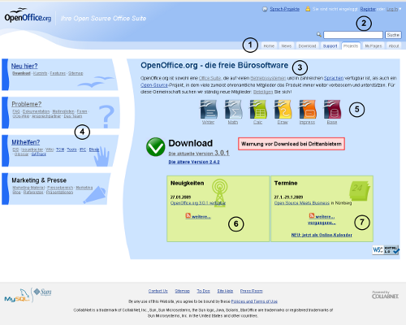
Am oberen Rand (1) der Startseite von de.OpenOffice.org findet man das Menü
der internationalen Seite des OpenOffice.org-Projekts. Alle Links führen auch direkt zur internationalen Seiten.
Diese Menüleiste findet man auf allen Seiten der OpenOffice.org-Projekte.
In der rechten oberen Ecke befinden sich die Felder und Links, um sich auf der Webseite anzumelden bzw. einzuloggen. (2)
Der untere Teil der Webseite ist projektspezifisch (3). Aufgrund der hohen Besucherzahlen auf den deutschsprachigen Seiten hat
das Projekt eine eigene Startseite, die an die internationale Startseite angelehnt ist. Sie soll die Besucher möglichst
schnell direkt zu ihrem Ziel leiten.
Im Zentrum ist eine Kurzbeschreibung des ProDukts und der Download-link zu finden. Auf der linken Seite (4) findet man vier
farblich hervorgehobene Links zu einer Einführungsseite, dem Support, der Sitemap und einer Seite zu Kontaktadressen.
Auf der rechten Seite (5) sind detailierte Produktbeschreibungen verlinkt. Darunter befinden sich aktuelle Mitteilungen (6)
und Links zu Veranstaltungen und Neuigkeiten (7).
Bei allen anderen Seiten außer der Startseite findest Du auf der linken Seite allgemeine Projektlinks und die "Project tools",
die z.B. Mailinglisten, Dokumentationen und Foren enthalten können. Auf der rechten Seite findet sich die Navigationsleiste
unseres deutschsprachigen Projektes. Alle Links auf dieser Seite führen in der Regel zu Webseiten, die innerhalb
des Projekts erstellt und gepflegt werden. Über den Link "Infos für Helfer", der sich am unteren Ende der
rechten Navigationsleiste befindet, gelangt man zu einer Seite, welche sich in erster Linie an die (potenziellen) Helfer
des Projekts wendet.
4. Projektverwaltung
4.1 Wie tritt man dem OpenOffice.org Projekt bei?
Das OpenOffice.org-Projekt besteht aus einer großen Anzahl von freiwilligen Mitarbeitern, die zum Großteil einen Teil
ihrer Freizeit damit verbringen, sich für OpenOffice.org einzusetzten – was auf eine Vielzahl von unterschiedlichen Weisen passieren kann.
Neben den vielen Vorteilen, die durch die freie Mitarbeit bestehen, ergibt sich auf der anderen Seite aber auch die Notwendigkeit, auch weiterhin neue
Mitarbeiter zu werben, die das bereits bestehende Team verstärken und durch ihre Mitarbeit auch die Zuverlässigkeit erhöhen.
Nur durch neue Mitstreiter kann das Projekt wachsen und sich auch in Zukunft weiterentwickeln.
Bevor im Folgenden beschrieben wird, wie man dem OpenOffice.org-Projekt allgemein und dem deutschen Sprachprojekt (lang/de) insbesondere
beitritt, sei noch versichert, dass man durch eine Anmeldung keinerlei Verpflichtungen eingeht und sich von nichts abhängig macht.
Jeder Mitarbeiter kann seine Zeit selber einteilen und entscheiden, wann er mit welchem Zeitaufwand welche Tätigkeiten macht und
wann er OpenOffice.org einfach OpenOffice.org sein lässt. Niemand kann aufgrund seiner Anmeldung zu etwas verpflichtet werden.
- 1. Schritt: Beitritt zum allgemeinen OpenOffice.org-Projekt:
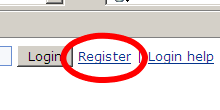
-
- Rechts oben über "Register" auf die internationale Anmelde-Seite wechseln
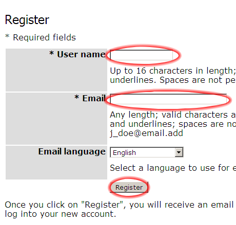
- Rechts oben über "Register" auf die internationale Anmelde-Seite wechseln
-
- Den gewünschten User- bzw. Login-Namen (ohne Leerzeichen; möglichst sprechend und dem eigenem Namen angelehnt, z.B. die ersten Buchstaben des Vornamens bzw. der Vornamen gefolgt vom Nachnamen) und eine aktuelle E-Mail-Adresse eingeben und mittels "Register" (Registrieren) bestätigen. Wichtig: Auch wenn es das System zuläßt, keine Umlaute im Usernamen. Das System ist dann nicht in der Lage, Dir Nachrichten zukommen zu lassen. Die Sprache kann nicht auf Deutsch verändert werden und sollte somit auf English belassen werden.
- Eine Anmeldebestätigung und ein Link, um Dein Zugangspasswort zu setzen, werden Dir in zwei separaten E-Mails an die angegebene
E-Mail-Adresse geschickt.
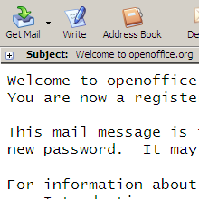 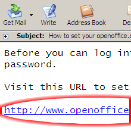
-
- Parallel wirst Du nach der Bestätigung Deiner Eingabe auf die Login-Seite von OpenOffice.org weitergeleitet. Diese ist aber nicht besonders hilfreich, bevor Du nicht ein Passwort gesetzt hast.
- 2. Schritt: Passwort setzen und Login auf der internationalen Seite:
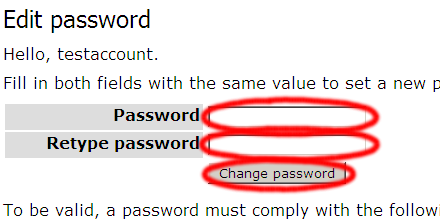
-
- Folge dem Link in der E-Mail, die Dir nach der Registrierung zugeschickt wurde. Hier musst Du ein Passwort eingeben und es nochmals bestätigen. Danach bist Du eingeloggt. Das Passwort darf bis zu 32 Zeichen enthalten, allerdings keine Leerzeichen.
- Durch Deine Anmeldung bei OpenOffice.org bist Du Mitglied in der großen Projekt-Gemeinschaft, die aus einer Vielzahl von unterschiedlichen Unterprojekten besteht.
- Der Beitritt zu einem Unterprojekt erfolgt in der Regel immer auf die gleiche, im folgenden geschilderte Weise:
4.2 Wie tritt man dem de-Projekt bei?
- 3. Schritt: Auswahl eines Projekt.
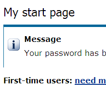
-
- Nachdem Du Dich eingeloggt hast, wirst Du auf Deine persönliche Startseite geleitet, auf der Du einen Überblick zu allen
Projekten erhältst, denen Du bereits angehörst. Zur Navigation innerhalb der Projektverwaltung müssen Cookies aktiviert werden.
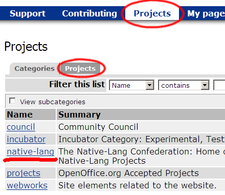
- Nachdem Du Dich eingeloggt hast, wirst Du auf Deine persönliche Startseite geleitet, auf der Du einen Überblick zu allen
Projekten erhältst, denen Du bereits angehörst. Zur Navigation innerhalb der Projektverwaltung müssen Cookies aktiviert werden.
-
- Als neues Mitglied hat Deine Liste selbstverständlich noch keinen Eintrag und Du bekommst daher lediglich eine kurzen Nachricht angezeigt, dass Dein Passwort geändert wurde.
- Eine Liste aller Projekte, unterteilt nach Kategorien, erhältst Du über den Link "Projects" in der oberen Menüleiste. Das Germanophone-Projekt (lang/de) ist ein Projekt aus der Kategorie "native-lang". Folgt man dem Link, erhält man eine Erklärung zur Kategorie native-lang.
- Die nachfolgendes Schritte erläutern beispielhaft, wie man das deutschsprachige OpenOffice.org-Projekt (lang-de) findet. Wenn Du
erstmal nur dem de-Projekt beitreten und alle anderen Projekte links liegen lassen willst, kannst Du auch gleich die
Mitgliederseite des de-Projektes anwählen und mit Schritt 4 weitermachen.
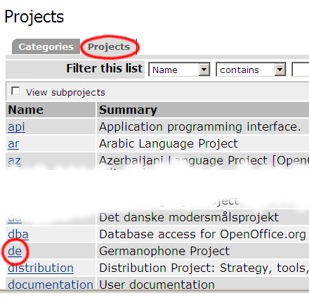
-
- Wähle den Reiter Projects um statt der Kategorienansicht eine alphabetische Auflistung aller Projekte zu erhalten. Wähle auf dieser Seite den Eintrag "de" aus.
- Du wirst auf die Startseite des ausgewählten Unterprojekts geleitet.
- 4. Schritt: Beitritt zu einem Projekt.
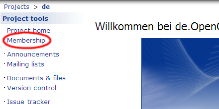
-
- Wähle in den Projekt tools der Seite den Eintrag "Membership" aus. Da das deutschsprachige Projekt eine Startseite hat, in der die Projekt tools ausgeblendet sind, wähle "Neu Hier?" um auf eine Seite mit Projekt tools zu gelangen.
- Du wirst auf die Mitgliederseite des Projektes geleitet, auf der alle dem Projekt beigetretenen Mitarbeiter mit einer
E-Mail-Adresse aufgelistet sind.
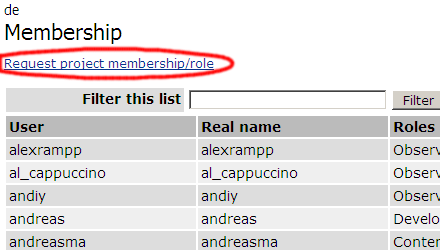
-
- Über der Liste den Link "Request project membership/role", den Du bitte betätigst.
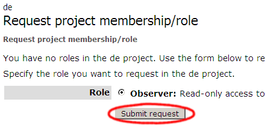
- Über der Liste den Link "Request project membership/role", den Du bitte betätigst.
-
- Es öffnet sich eine neue Seite, auf der Du festlegen kannst, welche Rolle Du in diesem Projekt einnehmen willst. Wenn dies Dein erstes Projekt ist, dem Du beitrittst, wird standardmäßig die Rolle als Observer (Beobachter/ Mitarbeiter) vorgegeben.
- Bestätige durch einen Klick auf "Submit Request" (Wunsch übermitteln) Deine Auswahl. Den Projektleitern wird nun unmittelbar Dein Username und die E-Mail-Adresse mitgeteilt. Für Deinen endgültigen Beitritt zum Projekt muss der Projektleiter Dich zulassen, es kann also eine kleine Weile dauern, bis Du Projektmitglied bist.
- Dein Browser hat Dich nach Deinem Antrag zum Projektbeitritt zurück auf die Startseite des Projekts geleitet. Deine Anmeldung zum Projekt ist in der Bearbeitung.
- Um zu überprüfen, ob der Antrag zum Projektbeitritt erfolgreich war, wähle im Menü auf der linken Webseite den Eintrag "My Pages" (Nur sichtbar, wenn Du eingeloggt bist.)
- Du gelangst wiederum auf Deine persönliche Startseite, auf der sich ein Eintrag befindet, der Dir mitteilt, dass Deine Mitgliedschaft beantragt wurde und über den Antrag noch nicht abschließend entschieden wurde.
- Sobald der Projektleiter Deinem Antrag bearbeitet hat, erhältst Du eine Begrüßungsmail und der Eintrag auf Deiner Startseite ändert sich in einen Link zur Startseite des Projekts. Zudem wird er Dich bitten Dich auf der Mailingliste vorzustellen.
4.3 Was sind Rollen?
Die Rolle, d.h. die Stellung und Verantwortlichkeit einer Person im Projekt, hängt von ihrer früheren Leistung ab. Diejenigen, die für lange Zeit wertvolle Mitarbeiter waren, bekommen das Recht, Quellcode direkt an den Server zu übermitteln.
4.4 Warum eine Rolle beantragen?
Für Projekte, die Code entwickeln, sind Rollen essenziell, da nur so die Qualität des Produkts durch die Erfahrung
der Developer garantiert werden kann.
Da wir im de-Projekt keine Code-Entwicklung betreiben, sind Rollen nicht so wichtig, jeder kann unabhängig von seiner
Stellung helfen. Dennoch solltest Du Dir überlegen ob Du nicht die Observer-Rolle beantragen willst. Zum einen tust Du damit
Dein Interesse am de-Projekt kund und zum anderen erhälst Du das Recht zur Abstimmung bei den regelmäßig stattfindenden
Wahlen der Projektleiter. Mit der Observerrolle gehst Du keine bindenden Verpflichtungen ein.
4.5 Was bedeutet User?
User (Anwender) Anwender sind Personen, die die Produkte aus dem Projekt verwenden. Personen in dieser Position entwickeln keinen Quellcode, aber durch das Verwenden der Software können sie Fehler melden, sich Funktionen wünschen, usw. Das ist die mit Abstand wichtigste Gruppe von Personen, da keine Notwendigkeit für dieses Projekt bestünde, wenn es keine Anwender gäbe. Sie können ihr Interesse an einem bestimmten Projekt zeigen, indem sie den Status eines Beobachters annehmen.
4.6 Was bedeutet Observer?
Observer (wörtlich Beobachter, besser: Mitwirkender): Mitwirkende - ein Ausdruck, der alle Rollen in einem Projekt ohne das Recht, Daten über CVS zu übermitteln, einschließt - sind Personen, die Quelltext schreiben, Korrekturen an der Dokumentation vornehmen oder anderweitig an dem Projekt mitarbeiten. Im Quelltext dürfen alle Beitragenden, die an der Datei gearbeitet haben, ihren Namen zu der Liste der Mitwirkenden hinzufügen.
4.7 Was bedeutet Developer?
Developer (Entwickler): Mitwirkende, die regelmäßig wertvolle Beiträge für ein Projekt abliefern, können in
diesem Projekt zum Entwickler befördert werden. Ein Entwickler hat Schreibzugriff auf den Quelltext des Projektes. Ein Entwickler
von Inhalten (Content Developer) hat Zugriff auf die Dokumentation eines Projekts, nicht aber auf den Quelltext.
Um vom Beitragenden zum Entwickler zu werden, muss man von einem anderen Entwickler als solcher ernannt werden. Der Projektleiter kann den
Beitragenden zum Entwickler machen und ihm Schreibzugriff auf den Quelltext des Projekts gestatten.
Entwickler können aus verschiedenen Gründen inaktiv werden. Ein Entwickler, der für mindestens sechs Monate lang inaktiv war,
kann seine Stellung verlieren. In diesem Fall oder in jenem Fall, dass der Wert der Beiträge eines Entwicklers abnimmt, kann der
Schreibzugriff von dem zuständigen Projektleiter wieder entzogen werden.
4.8 Was bedeutet Project Owner?
Project Owner (Projektleiter): Personen, die bereits für lange Zeit Entwickler sind und wirklich an der Entwicklung von Code beteiligt sind,
großes Wissen in ihrem Arbeitsbereich und OpenOffice.org als Ganzes vorweisen können sowie Führungsqualitäten besitzen,
können zum Projektleiter eines bestehenden Projekts ernannt werden. Ein Projektleiter ist verantwortlich für die Leitung des Projekts.
Er muss die Richtung vorzeigen und ist Teil des OpenOffice.org-Rats.
Von Entwicklern ernannt, kann ein Kandidat von der 2/3-Mehrheit der Projektleiter für ein neues oder ein verwaistes, bestehendes Projekt
angenommen werden.
Der Status des Projektleiters kann nicht nur durch Inaktivität bei der Veröffentlichung von Beiträgen (wie bei den Entwicklern
beschrieben) verloren gehen, sondern auch bei der mangelhaften Erfüllung der Verantwortung für jenes Projekt, für das der
Projektleiter zuständig ist. Die 2/3-Mehrheit der Projektleiter kann den Status als Projektleiter aufheben.
Eine Liste unserer gegenwärtigen Projektleiter kann in der Projektliste
gefunden werden.
5. OOoauthors.org
Unsere Übersetzungsarbeiten an Dokumenten laufen überwiegend auf http://oooauthors.org/de. Dort findest Du eine kurze Einleitung, wie wir das dort handhaben. Auf http://oooauthors.org/de/authors findest Du eine Übersicht der übersetzten und zu übersetzenden Dokumente. Dieser Leitfaden enthält umfangreiche Hinweise für Übersetzer und Korrekturleser.
5.1 Was muss ich tun, um ein Dokument Korrektur zu lesen?
Nachdem Du Dein Wunschdokument gefunden und Dich als Mitarbeiter dort eingetragen hast, solltest Du als erstes das Dokument auf "retract"/
zurückziehen setzen, damit es aus der "Review List"/ Revisionsliste verschwindet und nicht mehrere Mitarbeiter gleichzeitig
an einem Dokument arbeiten.
Beim Korrekturlesen solltest Du erstens das Dokument auf Rechtschreibungs- und Grammatikfehler überprüfen und zweitens prüfen,
ob Menüpunkte, Beschreibung und Screenshot zur aktuellen Version passt. Und drittens geht es nicht nur um eine fehlerfreie Dokumentation,
sondern vorrangig darum, ob sie verständlich ist.
5.2 Wie nimmt man ein Dokument aus der Revisionsliste?
Wenn Du auf den Verweis in der Review-Liste klickst, hast Du oben rechts in der grünen Leiste ein "State:"/ Status. Das steht jetzt auf "pending"/ sichtbar. Wenn Du auf den Pfeil daneben klickst, wählst Du "retract"/ zurückziehen aus dem Aufklappmenü. Damit verschwindet es dann von der Review-Liste.
5.3 Korrigiere ich die Fehler direkt in dem Dokument?
Ja. Aber vergiss nicht, das Aufzeichnen der Änderungen einzuschalten: "Bearbeiten - Änderungen - Aufzeichnen". Für alternative Formulierung kannst Du auch Notizen ("Einfügen -Notiz") nehmen.
5.4 Wie schnell sollte man dann ein Dokument wieder online stellen?
Mach es so, wie Du es schaffst. Zeitlich gibt es bei uns keine Vorgaben.
6. CVS (Concurrent Versions System)
6.1 Wie kommt denn die Webseite zustande?
Die Webseite wird von CollabNet gehosted. Einige Seiten, besonders die zu den Mailinglisten, dem Datenbereich und der Projektverwaltung werden durch Skripte von CollabNet erstellt. Aber der Inhalt der meisten de-Webseiten wird von Mitgliedern des de-Projektes als (x)html-Dateien erstellt und gepflegt. Zur Verwaltung der Dateien wird dasselbe CVS (Concurrent Versions System) eingesetzt, das auch für den Code von OpenOffice.org Verwendung findet. Ein besonderes Verwaltungssystem für die Inhalte existiert nicht.
6.2 Wie kann ich eine bestehende Webseite korrigieren?
Du öffnest einen ssh-Tunnel zu CollabNet, logst Dich mit Deinem OOo-Nutzernamen im CVS ein, führst zunächst ein Update
der fehlerhaften Dateien auf Deine lokale Festplatte durch, korrigierst die fehlerhafte Datei dann lokal und commitest danach die korrigierte
Version mit einem vielsagenden Kommentar wieder ins entfernte CVS. Bei der Korrektur sollte man darauf achten, dass durch den html-Editor
keine zusätzlichen, überflüssigen Veränderungen auch in der Kodierung von Sonderzeichen eingebracht werden.
Aus diesem Grund ist OOo-Writer nicht als Editor geeignet.
6.3 Wie kann ich eine neue Webseite erstellen?
Du kannst zunächst die Webseite lokal im CVS-Verzeichnis erstellen. Dann öffnest Du einen ssh-Tunnel zu CollabNet, logst Dich mit Deinem OOo-Nutzernamen im CVS ein, und teilst dem CVS mit, dass eine neue Datei eingepflegt werden soll (Add). Hierbei wird unterschieden, ob es sich um eine reine Textdatei handelt, zu der spätere Änderungen zeilenweise erfolgen sollen, oder ob es eine Binärdatei ist. Dann führst Du ein normalen Commit der Datei mit einem vielsagenden Kommentar durch.
6.4 Warum ist das so kompliziert?
Tunnel und Anmeldung dienen der Zugangskontrolle, damit tatsächlich nur die Personen, die eine entsprechende Berechtigung haben,
die Webseiten ändern können. Die Verwendung des CVS erleichtert zudem die Versionierung und erlaubt es, sowohl die Veränderungen
zu verfolgen als auch bei Fehlern alte Versionen wieder herzustellen.
Grundsätzlich sind die jeweiligen Schritte einfach und wiederholen sich immer wieder. Nur die ersten Versuche sind etwas schwierig.
Bei Fragen stehen die erfahrenen Nutzer auf der dev@de-Liste gerne helfend zu Seite. Besonders wenn Du nicht planst nur wenige Korrekturen
vorzunehmen, ist es einfacher, die Korrekturvorschläge an jemanden zu schicken, der schon CVS-Schreibrechte hat.
6.5 Wie kann ich schreibend am CVS teilnehmen?
Dazu sind sowohl einige technische als auch administrative Hürden zu überwinden.
Zunächst benötigst Du Content-Developer-Status im de-Projekt. Diesen kannst Du in der Projektverwaltung beantragen
und er wird Dir vom Projektleiter zugeteilt. Eine Unterzeichnung des JCA ist (für die Webseite allein) nicht mehr unbedingt
notwendig aber empfohlen. Schließlich legst Du noch einen Issue an, in dem Du die Techniker von CollabNet bittest, einen selbst
erzeugten ssh-Schlüssel zu akzeptieren und wartest, bis das erfolgt ist.
Auf der technischen Seite werden Software für Schlüsselerzeugung, ssh-Tunnel und den CVS-Zugriff selbst benötigt.
Je nach verwendetem Betriebssystem existieren hier verschiedene freie und kommerzielle Lösungen. Im unixoiden Bereich sind Kommandozeilentools
meist bereits integriert, für Windows kann Cygwin, WinCVS oder SmartCVS verwendet werden.
Detailierte Anweisungen finden sich auf:
- http://de.openoffice.org/dev/ssh2_einfuehrung.html
- http://de.openoffice.org/dev/CVS_einfuehrung.html
- http://de.openoffice.org/dev/cvs_win-howto.html
6.6 Was passiert auf der CVS- Mailingliste?
Auf der Mailingliste cvs@de.openoffice.org werden alle Änderungen im entsprechenden Verzeichnis angezeigt. Dabei werden aufgeführt: Namen des Bearbeiters, Datum, Namen der geänderten Dateien, die eingegebenen Kommentare und die Änderungen selbst aufgeführt. Dies dient vor allem denjenigen, die häufig Änderungen durchführen, zur Information. Für andere Mitglieder ist sie bestenfalls langweilig.
6.7 Was bedeuten die Buchstaben-Codes, die zu jeder Datei im CVS angegeben werden?
- U -> neue/geänderte Datei wurde komplett heruntergeladen ("Update")
- P -> nur die änderungen zwischen lokaler und entfernter Kopie wurden übertragen ("Patch")
- U & P sind im Resultat dasselbe: Lokal hat man dieselbe Datei wie entfernt.
- M -> die Datei wurde lokal geändert. Mögliche Änderungen der entfernten Kopie wurden erfolgreich eingearbeitet ("Modified/Merge")
- C -> die Datei wurde lokal geändert. Der Versuch die Änderungen der entfernten Kopie einzuarbeiten ist mißlungen. Manuelle Korrektur erforderlich. ("Conflict")
- ? -> Datei liegt auf der lokalen Festplatte, gehört aber nicht zu den CVS-Dateien (nicht im Repository)
- A -> Datei wurde lokal zu den CVS-Dateien hinzugefügt (um sie tatsächlich hochzuladen muß man sie erst committen) ("Added")
- R -> Datei wurde lokal von den CVS-Dateien gelöscht (um sie tatsächlich zu löschen muß man erst einen Commit durchführen) ("Removed")
7. Wer hilft, wenn ich mal nicht weiter weiß?
Alle auf den Seiten des Projekts genannten Ansprechpartner und diejenigen, die in der Mailingliste dev@de.OpenOffice.org eingeschrieben sind. In diese Liste kannst Du auch Mails schicken, ohne eingeschrieben zu sein.
zurück zu "Wer wir sind" | zurück zu "Wie wir uns organisieren" | zurü zu "Lizenzen"
zurück zur Mitarbeiter-FAQ-Hauptseite | zurück zur Übersichtsseite der deutschsprachigen FAQs